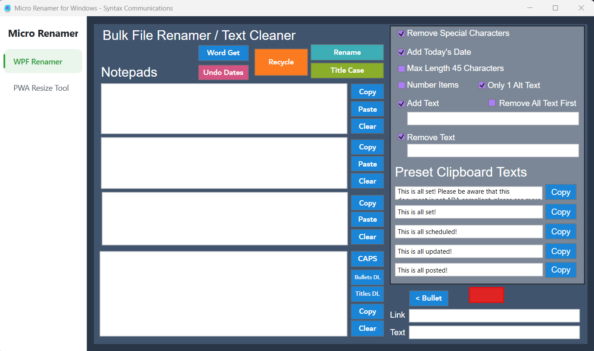
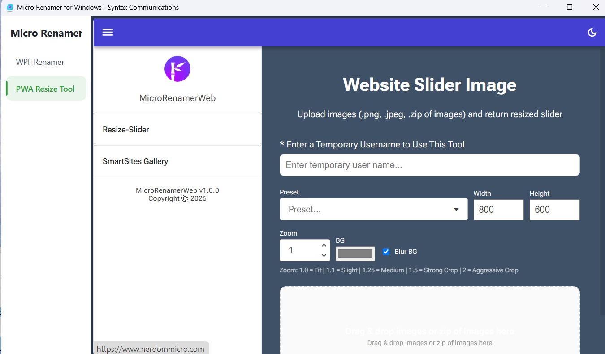
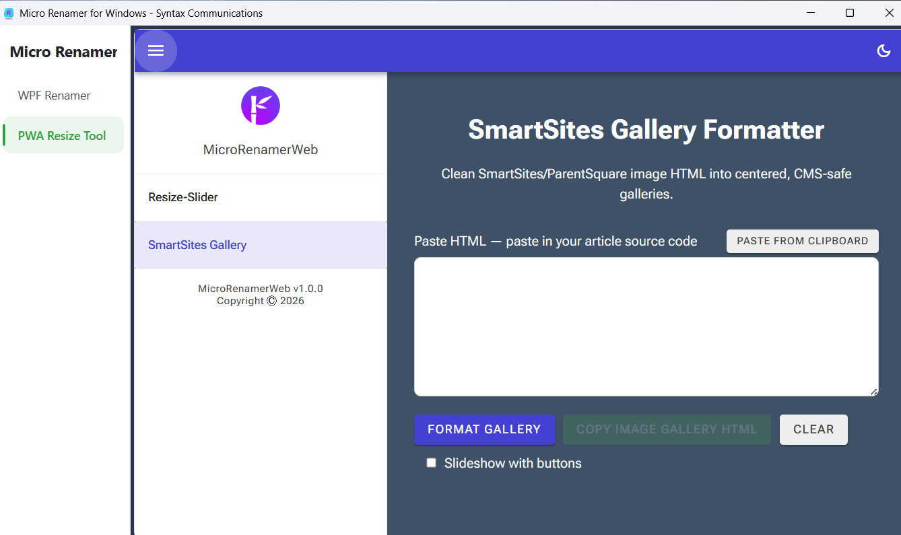

MicroRenamerWPF



Desktop file-renaming/image-prep tool with a "PWA Resize Tool" tab that embeds my web companion app (MicroRenamerWEB) right inside the desktop window via WebView2.
C#WPF
ImageSharpOpen XML